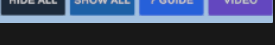
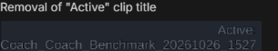

New Features & Capabilities
-
Onboarding Persistence: Interactive onboarding tutorial will not show up again if the user has already gone through it once.
-
Universal Window Snapping: Allow each feature window to snap to each other without compromise (previously only certain feature windows were allowed to snap automatically).
-
Coach & Trainee Split View Function (Release 4):
- 3D athlete character model will no longer appear when no motion capture data is imported.
- Added full 3D camera navigation: users can now freely move and orbit the camera view around the athletes.
-
Motion Editor Refinements:
- Dynamic trimming preview: when trimming motion, the thumbnail preview dynamically follows where the start or end handles track the cursor.
- Timeline visual states: trimmed-out sections are clearly greyed out on the timeline.
- Playback restrictions: user is prevented from playing motion while actively in the onboarding tutorial sequence.
-
Automated Motion Detection System (Release 3):
- Algorithm updates to improve run detection precision.
- Added detection system to automatically identify the preparation phase.
-
Implemented a color-coded timeline section for each phase, allowing users to clearly identify the four athletic motion stages:
- No Color: No motion detected or movement outside the four-stage motion cycle.
- Red: Run phase.
- Yellow: Preparation phase.
- Green: Kick / contact with ball.
- Blue: Follow-through phase.
-
Website Additions:
Bug Fixes
-
Data Import Isolation: When a user imports trainee motion data, it is strictly isolated to the trainee tab. Switching to coach tab displays an error message prompting the user to import coach data.
-
Coach & Trainee Split View:
- Fixed a bug where clicking the reset button did not reset the active session.
- Fixed a bug where no motion was ever imported, but motion was erroneously detected in the coach UI or split screen.
- Fixed a bug where if no motion was imported, returning to the coach UI displayed ghost motion.
- Removed unnecessary redundant second unhide UI button.
-
Motion Editor: Fixed a bug where no motion had been imported, but returning to coach UI from editor indicated motion was imported.
New Features & Improvements
-
Application Lifecycle: Added a dedicated way for users to cleanly quit the LeSoCo application.
-
Dynamic Responsive UI: UI will dynamically shrink and adapt layout according to screen size.
-
Coach & Trainee Split View Function (Release 3):
- Added a warning notification if no motion file is imported.
- Added an animated loading screen during the transition from split view back to coach UI.
- Added an unhide UI button when the interface controls are hidden.
- Added the hide button to the onboarding tutorial.
-
Added a visual highlight indicator showing where the user last clicked:
- If the user last clicked on the coach screen, the coach motion will be imported back to the coach UI when returning.
-
Motion Editor:
- Enabled hover state to inspect tooltips across controls and buttons.
- Returning to the coach screen from the motion editor preserves active progress without starting a new session.
-
Repositioned UI Tools:
Reorganized and repositioned all action UI tools for improved ergonomics and workflow speed.

-
Automated Motion Detection System (Release 2):
- Added a dedicated button to trigger the detection system directly within the motion editor.
- Started initial athletic sequence detection with running: system now has the ability to detect a run.
-
Nomenclature Standardization: Standardized release naming by removing the word "alpha" across features in favor of "release [number]" (e.g. Release 2, Release 3).
-
Website Updates:
- Added fluid interactive animations across page components.
- Repositioned key UI elements for enhanced navigation and presentation.
Bug Fixes
- Fixed a bug where pressing the space bar did not play motion in split screen view.
- Fixed a bug where importing motion in trainee resulted in the motion being imported into both the trainee and coach split screen views.
- Fixed a bug in motion editor where if loop is turned off, the motion continued playing past the trimmed section.
- Decreased the physical size of the motion timeline playhead for finer scrubbing accuracy.
- Adjusted and raised
coach_benchmark positioning upward to fit cleanly inside its container box.
New Features & Capabilities
-
Transitions for Camera Perspective: Added smooth transitions when orbiting and switching annotation camera viewpoints.
-
Coach & Trainee Split View Function (Alpha release):
- Dedicated dual split screen to review trainee and coach motion side-by-side.
- Opens up an independent comparison screen to watch synchronous kinematic motion.
- Added height alignment and athlete scaling controls.
-
Standalone Desktop Executable (.exe):
- Added ability to launch LeSoCo directly from a compiled
.exe file for faster, simpler access without requiring Unity editor launch.
- Starting from LeSoCo v1.3, an
.exe will be deployed with every release onwards.
-
Motion Editor (Alpha release 4):
- Overhauled UI to make the timeline editing workflow simpler and more intuitive.
- Space bar shortcut now toggles start and stop motion playback.
- Motion state automatically resets when initiating a new session, and cleanly terminates on exit.
-
Cleaned up top bar title: removed "LeSoCo Resolve" and replaced it with dynamic clip title display (removed redundant "Active" clip label).

- Replaced cumbersome "In" and "Out" buttons with a streamlined single CUT button.
- Removed cluttered legacy panels: "Media Pool", "Timeline", and "Inspector" for a cleaner workspace.
-
Automated Motion Detection System (Alpha release 2): Enhanced automated detection and alignment for motion phases.
-
Official Website Launch: Implemented comprehensive product website showcasing features, documentation, and roadmap.
Bug Fixes
- Fixed a bug where the motion editor "browse .lsc file" dialog opened the OS file explorer twice.
New Features & Improvements
-
Motion Editor Refinements (Alpha release 3):
- Officially renamed video editor to "Motion Editor" across all menus.
- Aligned Motion Editor styling to match the primary Coach Session UI design language.
- Users can now import motion recordings directly from the coach session UI or local disk.
- Added animated loading screen between view transitions.
- Live visual playback of recorded motion inside the editor with an accurate timecode counter.
-
Four-Stage Motion Detection: Implemented automated detection system to identify key athletic phases: run-up, preparation, ball contact/kick, and follow-through.
- Added synchronized comparison system matching coach and trainee key moments across all four phases.
- Added Motion Editor walkthrough section to the interactive onboarding tutorial.
- Safety guard: Resetting the scene while adding or editing an annotation now triggers a confirmation prompt to prevent data loss.
New Features & Improvements
-
Video Editor Evolution (Alpha release 2):
- Simplified workflow focused strictly on trimming unnecessary motion captures.
- Migrated exported file format from
.avi video to native .lsc kinematics data for seamless playback in LeSoCo.
- Added persistent toggle button in Zen mode to unhide all UI overlays on demand.
Bug Fixes
- Fixed a bug where clicking directly on an annotation marker caused it to disappear.
New Features & Improvements
-
Introduced Video Editor (Alpha release 1):
- Added dedicated scene for video and motion clip editing.
- In/Out trimming handles and quick-save functionality.
-
Coach vs. Trainee Mode Toggle:
- Coach mode renders the solid character model; Trainee mode displays the ghost character overlay.
- Added toast notification confirming motion data has been saved successfully.
Bug Fixes
- Fixed camera orbit jitter when moving camera angles quickly.
New Features & Improvements
- Refined RAW IMU vs. polished IMU telemetry filtering.
- Switched to manual motion save prompt to prevent uncontrolled storage usage.
- Added ability to re-edit published annotations and adjust published camera viewpoints.
Bug Fixes
- Hidden bent joint degree indicators when not in diagnostic mode.
- Hidden ghost trainee model while operating in coach mode.
- Fixed motion capture playback failure in new sessions.
- Fixed character root transform failing to reset after playback from prior session.
- Resolved persistent issues with RESET button not starting fresh session.
- Fixed record button becoming unresponsive on new sessions.
New Features & Improvements
- RAW IMU vs. polished IMU beta release 2.
- Tutorial updated with steps for toggling UI visibility.
- Bounded UI layout prevents dialogs from stretching beyond screen borders.
- Motion analytics calculation engine updated to evaluate shoulder and arm kinematics.
Bug Fixes
- Fixed bug allowing playback while actively typing an annotation text box.
- Fixed reset button failing to start a clean session state.
- Fixed timer failing to start upon record button activation in new sessions.
New Features & Improvements
-
Interactive Tutorial Level: Onboarding sequence teaching UI controls, with skip option.
- RAW IMU vs. polished IMU telemetry beta release.
- Added dedicated reset session button and dedicated pause button.
- Complete UI visual overhaul for cleaner contrast.
- Removed freehand drawing annotation tool in favor of structured 3D spatial markers.
- Restricted "Tag Pose" feature so identical poses cannot be tagged twice on the same keyframe.
- Safety guard: Play button disabled when no motion data is present.
Bug Fixes
- Fixed guide modal dimming effect appearing behind tutorial elements.
- Prevented double-clicking the record button from corrupting the active capture session.
New Features & Improvements
- Implemented and tested native
.lsc kinematics data format.
- Motion now starts playing instantly upon clicking the Play control.
- Record button now records the motion currently in progress.
- Implemented initial RAW IMU vs. polished IMU telemetry algorithms.
Bug Fixes
- Fixed bug preventing JVC jog-shuttle control panel from closing.
- Fixed bug where two timeline scrub bars appeared simultaneously.
- Resolved Sony Mocopi connection issue with Unity by adding a top menu bar connector.
New Features & Improvements
-
Timeline Integration: Coaches can scrub seamlessly across all recorded takes and keyframe notes.
-
Save & Load Session State: Ability to save and reload kinematics sessions across multiple days.
- Camera auto-focus zooms to numbered note markers in 3D space.
- Numbered annotations can only be created when valid notes exist.
- Character automatically returns to standing stance upon replaying motion.
Bug Fixes
- Fixed scaling on small UI elements and corrected speedometer telemetry reading.
- Notes now automatically billboard to face the active camera direction.
New Features & Improvements
- Continuation of annotation update: added functional circle and star drawing shapes.
- Introduced 3D pinned annotations: coaches can attach notes directly to 3D space.
New Features & Improvements
- Interactive pen cursor activation on UI buttons.
- Drawable trajectory lines on viewport.
- First-generation annotation toolbox: Pen, Eraser, and Arrow pointer tools.